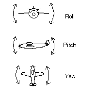

Paper Airplane Activity
Materials Needed
- Paper
- Scissors
- Tape (optional).
Concepts
This project is mostly science. It involves things such as aerodynamics, Bernoulli's principle, and more.
How do planes fly?
How does a plane stay in the air? As you probably know, planes have wings which let them fly. But do you know how exactly this happens?
Bernoulli's principle
There is a scientific concept known as Bernoulli's principle that states that when fluids or gases are in motion, they have a lower pressure then when they stay still. A plane's wing is shaped in such a way that air moving over the top of the wing has to move faster than air moving under the wing. This creates a low-pressure zone above the wing and a higher-pressure zone above the wing. The air attempts to equalize the pressure by lifting the wing, providing what is known as lift- an upward force acting on the plane.
Most paper airplanes, however do not have this same wing shape. Instead, they rely on the angle of the wings and their velocity to move through the air.
How do planes steer? Planes use the same things to fly as to steer- they use lift and the angles of what are known as control surfaces to steer. They use flaps on their wings and tail to bank (rolling to the side to turn), turn, and move up or down.
In what ways can a plane fly? There are different terms for the way that a plane is positioned. It has pitch (the up and down angle), roll (rotation around the line from the nose to the tail), and yaw (left and right rotation).
Your turn to try it!
Try making some different paper airplanes! Some examples are provided below. Feel free to try experimenting with trim and control surfaces, different designs, and more!
Fun facts about Airplanes
- The SR71 Blackbird can hit speeds of as much as Mach 3.2- that's 3.2 times the speed of sound, or over 2000 miles per hour (3218.68 kph)!
- Some planes can refuel in the air!
- Different planes have different purposes, which can lead to different designs! For instance, the B2 has an unusual shape for stealth- it can deflect radio waves at an angle to avoid detection! Other planes may have more than one cockpit or body, some planes have different arrangements of their internal structures to solve certain problems, and more!
- The A10 Warthog has guns so powerful that they can only be used in short bursts- otherwise the plane will stall out (it doesn't provide enough lift), potentially resulting in a crash.
- While most planes' wings are firmly affixed to their body, some planes, such as B1s, can change the angle between their wings and their body! This allows them to choose between gain more stability or lift and gaining more speed!